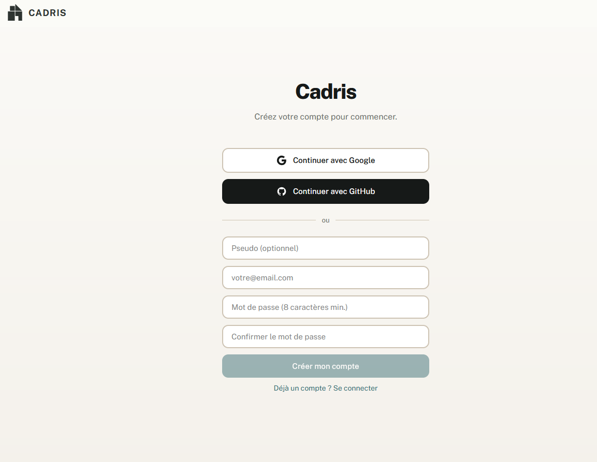
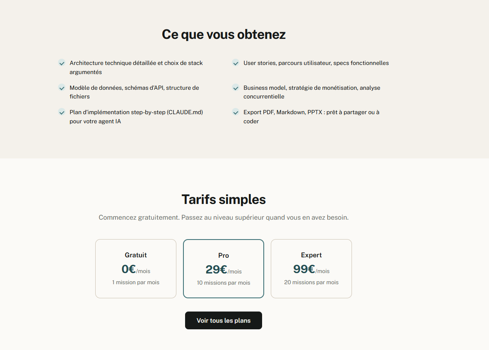
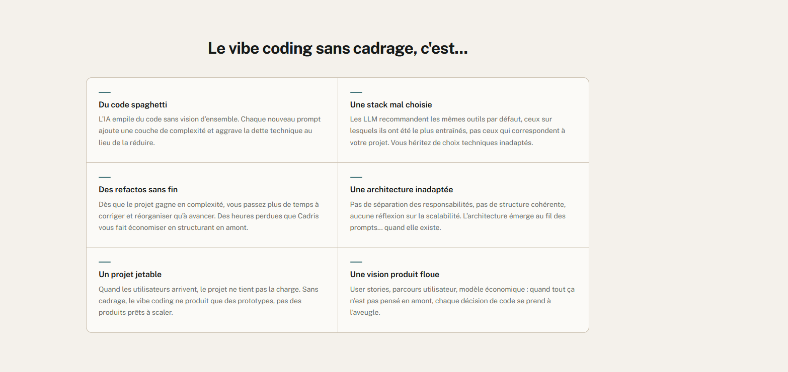

IA / SaaS Agentique
Cadris.ai - SaaS Agentique pour l'architecture de projets numériques
« Le chaînon manquant du vibe coding ». Cadris.ai transforme une simple description de projet en un dossier de cadrage complet de 24 documents (stratégie, business, produit, tech, design, plan d'implémentation, user guide) généré en quelques minutes par 8 agents IA travaillant en 4 vagues séquentielles. Pensé pour les devs et fondateurs qui veulent passer du « j'ai une idée » au « j'ai un plan exécutable par Claude Code / Codex ».





Le problème résolu
Avec le vibe coding, on demande à un LLM de coder sans plan. Au mieux on obtient un prototype qui fonctionne 10 minutes. Au pire, on accumule code spaghetti, stack mal choisie, refactos à rallonge, architecture inadaptée et vision produit floue. Le code n'est pas le problème : c'est ce qui n'a pas été décidé avant qui coûte ensuite des semaines.
Cadris.ai répond à cette douleur en industrialisant la phase de cadrage. L'utilisateur décrit son projet en quelques phrases, répond à 5 questions de qualification, puis laisse 8 agents spécialisés produire un dossier complet : stratégie, business model, user stories, architecture, data model, design system, plan d'implémentation prêt pour Claude Code ou Codex.
Cible utilisateur
- Fondateurs et solopreneurs qui veulent valider un projet avant d'y mettre du temps technique.
- Freelances et équipes produit qui doivent livrer un cadrage propre à un client en quelques jours.
- Développeurs qui utilisent Claude Code / Codex et veulent un brief permanent (CLAUDE.md, user stories, architecture) au lieu de re-cadrer à chaque session.
Comment ça marche : orchestration multi-agents
Le coeur du système est une orchestration multi-agents pilotée par l'OpenAI Agents SDK. Les 8 agents sont organisés en 4 vagues séquentielles, avec une phase de critique entre les vagues 2 et 3 sur les plans payants, et une pause utilisateur pour valider les documents avant la suite.
Les 4 vagues de production
- Vague 1 - Stratégie (1 agent, 4 docs) : vision produit, problème résolu, ICP / personas, value proposition.
- Vague 2 - Cadrage (3 agents, 8 docs) : business model, pricing, marché, scope V1, MVP, PRD, user stories, feature specs. Cooldown 10s entre agents + critic + pause user.
- Vague 3 - Technique (3 agents, 8 docs) : architecture, stack, NFR / sécurité, data model, API spec, UX principles, information architecture, design system. Critic + pause user.
- Vague 4 - Consolidation (1 agent, 4 docs) : executive summary, dossier consolidé,
CLAUDE.md(plan d'implémentation), user guide.
Chaque agent fonctionne avec un mécanisme de retry exponentiel (5 tentatives, backoff capé à 120s) et un fallback documentaire : si un agent échoue définitivement, un placeholder est injecté pour ne jamais laisser de trou dans le dossier final. Le flux est diffusé en temps réel au front via SSE (Server-Sent Events) avec un heartbeat toutes les 15s pour maintenir la connexion.
Les 24 documents produits
Un dossier Cadris est composé de 24 documents organisés en 6 dossiers thématiques. Chaque document est typé, signe son agent producteur, sa version, et porte un badge certainty (Solide / À confirmer / Inconnu / Bloquant) qui force l'auteur des prompts à tracer son niveau de confiance.
Découpage du dossier
- 01-strategy (4 docs) : vision_produit, problem_statement, icp_personas, value_proposition.
- 02-business (3 docs) : business_model, pricing_strategy, market_analysis.
- 03-product (5 docs) : scope_document, mvp_definition, prd, user_stories, feature_specs.
- 04-technical (5 docs) : architecture, tech_stack, nfr_security, data_model, api_spec.
- 05-design (3 docs) : ux_principles, information_architecture, design_system.
- 06-synthesis + racine (4 docs) : executive_summary, dossier_consolide,
CLAUDE.md(plan d'implémentation step-by-step), user_guide.
Stack technique
Architecture monorepo répartie sur 4 services, chacun déployé en container Cloud Run isolé (non-root, .dockerignore, secrets via GCP Secret Manager) :
Services et rôles
- apps/web - Next.js 15 + Turbopack + React + NextAuth v5 (port 3000) : UI publique, auth, gestion de session.
- apps/control-plane - FastAPI + SQLAlchemy + bcrypt (port 8000) : auth proxy HMAC, billing Stripe, missions, partage de dossiers.
- apps/runtime - FastAPI + OpenAI Agents SDK (port 8001) : orchestration des vagues, stream SSE, retries et fallback documentaires.
- apps/renderer - FastAPI + WeasyPrint (port 8002) : conversion Markdown vers PDF haute fidélité.
- packages - schemas partagés (Zod côté web, Pydantic côté Python), client SDK, bibliothèque de prompts en markdown.
- Reverse proxy - Caddy avec HSTS, CSP, X-Frame-Options, HTTPS auto via Let's Encrypt.
- Base de données - SQLite en dev, Postgres Neon.tech en prod.
- Déploiement - GCP Cloud Run, region europe-west1, 6 services, script
unique
deploy/gcr/deploy.sh, image tagging git-sha-timestamp pour rollback rapide.
Spécificités du plan Free
Le plan gratuit utilise Llama 3.3 70B Instruct Turbo via Together AI,
wrapppé avec OpenAIChatCompletionsModel (Together n'expose pas /v1/responses).
Pour rester rentable, le contexte par document est tronqué à 800 caractères
(vs 1200 sur les plans payants), la phase de critique est désactivée, et un retry
intelligent re-prompte le modèle en mode concis quand un JSON mal formé est détecté.
Sur Pro / Expert, le moteur bascule sur GPT-4.1 et l'agent business gagne accès
à Perplexity pour les recherches de marché.
Plans tarifaires
- Free - 0€/mois : 1 mission par mois, 24 docs, export Markdown.
- Starter - 9€/mois : 5 missions, agent critique qualité, exports PDF + Markdown.
- Pro - 29€/mois (le plus pris) : 10 missions, critic, PDF + MD + ZIP, historique complet, support prioritaire.
- Expert - 99€/mois : 20 missions, critic, exports PDF + MD + ZIP + PPTX, support dédié.
L'enforcement des quotas passe par check_and_increment_mission() avec un
SELECT ... FOR UPDATE sous Postgres pour éviter les races, un reset lazy le 1er
du mois, et un rollback atomique si le runtime crashe après l'incrément : le crédit
n'est pas consommé pour rien.
Sécurité
Tout le trafic entre le web Next.js et le control-plane FastAPI passe par un auth proxy
HMAC-SHA256 avec replay window de 60s, body hash anti-tampering, et un secret distinct du
secret NextAuth. Côté runtime, un second secret HMAC isole encore le service de
l'extérieur. Les user_id sont validés par regex strict pour neutraliser
les tentatives de path traversal.
Garde-fous applicatifs
- Rate limits : auth 5 req/min/IP, lancement de mission 2 req/min/user, liens publics partagés 10 req/min/IP. Implémentation in-memory bounded deque.
- Caddy : HSTS
max-age=63072000; includeSubDomains; preload, CSPdefault-src 'self',X-Frame-Options: DENY,X-Content-Type-Options: nosniff. - Share tokens : 32 octets générés via
secrets.token_urlsafe, seul le sha256 est stocké en base, TTL 30 jours. - Reset password : token TTL 1h, rate-limit 5 req/min/IP, anti-énumération sur la réponse.